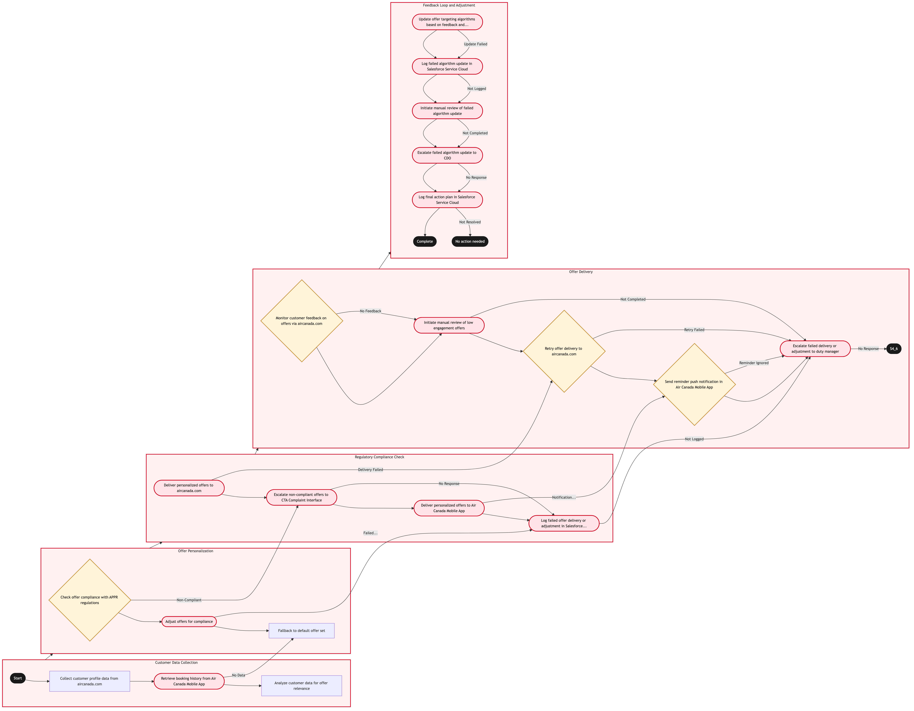

Updated 2026-08-20
Digital Personalisation and Offer Targeting
Process flow
Click to zoom

Process steps
▼
Phase 1 — Customer Data Collection
3 steps
| Step | Activity | Role | System | Input | Output | KPI | Dec | Exc | Pain point |
|---|---|---|---|---|---|---|---|---|---|
| 1.1 | Collect customer profile data from aircanada.com | Aeroplan Member Services Agent | aircanada.comA | Customer login and interaction history | Customer profile with loyalty status, booking preferences | 95% accuracy in data collection within 2 seconds | N | N | Inaccurate data can lead to irrelevant offers. |
| 1.2 | Retrieve booking history from Air Canada Mobile App | Aeroplan Member Services Agent | Air Canada Mobile AppA | Customer ID | Booking history and travel preferences | 85% successful data retrieval within 1 second | N | Y | Mobile app downtime affects offer personalization. |
| 1.3 | Analyze customer data for offer relevance | Aeroplan Member Services Agent | aircanada.comA | Customer profile and booking history | Relevant offer suggestions | 70% of offers meet customer preferences within 3 seconds | N | N | Complex algorithms can slow down response times. |
▼
Phase 2 — Offer Personalization
3 steps
| Step | Activity | Role | System | Input | Output | KPI | Dec | Exc | Pain point |
|---|---|---|---|---|---|---|---|---|---|
| 2.1 | Check offer compliance with APPR regulations | APPR Adjudicator | Salesforce Service CloudA | Offer suggestions | Compliance status and necessary adjustments | 90% compliance check accuracy within 5 seconds | Y | N | Regulatory updates can lead to frequent changes. |
| 2.2 | Adjust offers for compliance | APPR Adjudicator | Salesforce Service CloudA | Non-compliant offer details | Compliant offer adjustments | 80% of adjustments made within 1 minute | N | Y | Manual adjustments can introduce errors. |
| 2.3 | Fallback to default offer set | Aeroplan Member Services Agent | aircanada.comA | No booking history data | Default offers based on general preferences | 60% customer satisfaction with default offers | N | N | Default offers may not meet individual needs. |
▼
Phase 3 — Regulatory Compliance Check
4 steps
| Step | Activity | Role | System | Input | Output | KPI | Dec | Exc | Pain point |
|---|---|---|---|---|---|---|---|---|---|
| 3.1 | Deliver personalized offers to aircanada.com | Aeroplan Member Services Agent | aircanada.comA | Compliant offer suggestions | Personalized offers displayed on customer page | 90% successful delivery rate within 2 seconds | N | Y | Technical issues can prevent offer display. |
| 3.2 | Escalate non-compliant offers to CTA Complaint Interface | APPR Adjudicator | CTA Complaint InterfaceA | Non-compliant offer details | Compliance review and feedback | 85% response rate from CTA within 1 hour | N | Y | Delayed responses can impact customer satisfaction. |
| 3.3 | Deliver personalized offers to Air Canada Mobile App | Aeroplan Member Services Agent | Air Canada Mobile AppA | Compliant offer suggestions | Personalized offers pushed to app notifications | 85% successful delivery rate within 3 seconds | N | Y | App push notifications can be missed. |
| 3.4 | Log failed offer delivery or adjustment in Salesforce Service Cloud | Aeroplan Member Services Agent | Salesforce Service CloudA | Error details | Case logged for investigation | 95% of errors logged within 1 minute | N | Y | Logged cases can delay resolution. |
▼
Phase 4 — Offer Delivery
5 steps
| Step | Activity | Role | System | Input | Output | KPI | Dec | Exc | Pain point |
|---|---|---|---|---|---|---|---|---|---|
| 4.1 | Monitor customer feedback on offers via aircanada.com | Aeroplan Member Services Agent | aircanada.comA | Customer feedback | Feedback analysis and trends | 70% successful feedback capture rate within 1 minute | Y | N | Low feedback rates can hinder improvements. |
| 4.2 | Initiate manual review of low engagement offers | Aeroplan Member Services Agent | Salesforce Service CloudA | Low engagement offer details | Review and potential adjustments | 80% of reviews completed within 2 hours | N | Y | Manual reviews can be time-consuming. |
| 4.3 | Retry offer delivery to aircanada.com | Aeroplan Member Services Agent | aircanada.comA | Original offer details | Successful delivery confirmation | 90% successful retry rate within 5 minutes | Y | N | Technical issues may persist. |
| 4.4 | Send reminder push notification in Air Canada Mobile App | Aeroplan Member Services Agent | Air Canada Mobile AppA | Original offer details | Reminder notification sent | 75% successful reminder rate within 1 minute | Y | N | User may ignore reminders. |
| 4.5 | Escalate failed delivery or adjustment to duty manager | Aeroplan Member Services Agent | Salesforce Service CloudA | Error details and case logs | Action plan from duty manager | 90% response rate from duty manager within 1 hour | N | Y | Escalation can delay issue resolution. |
▼
Phase 5 — Feedback Loop and Adjustment
5 steps
| Step | Activity | Role | System | Input | Output | KPI | Dec | Exc | Pain point |
|---|---|---|---|---|---|---|---|---|---|
| 5.1 | Update offer targeting algorithms based on feedback and trends | Aeroplan Member Services Agent | aircanada.comA | Feedback analysis and trends | Improved offer targeting models | 80% improvement in offer relevance within 1 week | N | Y | Algorithm updates can introduce new issues. |
| 5.2 | Log failed algorithm update in Salesforce Service Cloud | Aeroplan Member Services Agent | Salesforce Service CloudA | Update error details | Case logged for investigation | 95% of errors logged within 1 minute | N | Y | Logged cases can delay resolution. |
| 5.3 | Initiate manual review of failed algorithm update | Aeroplan Member Services Agent | Salesforce Service CloudA | Update error details and case logs | Review and potential fixes | 80% of reviews completed within 2 hours | N | Y | Manual reviews can be time-consuming. |
| 5.4 | Escalate failed algorithm update to CDO | Aeroplan Member Services Agent | Salesforce Service CloudA | Update error details and case logs | Action plan from CDO | 90% response rate from CDO within 1 hour | N | Y | Escalation can delay issue resolution. |
| 5.5 | Log final action plan in Salesforce Service Cloud | Aeroplan Member Services Agent | Salesforce Service CloudA | Action plan details | Final case resolution | 95% of cases resolved within 1 day | N | Y | Resolution may not address root cause. |
Swim lanes
Aeroplan Member Services Agent1.1 1.2 1.3 2.3 3.1 3.3 3.4 4.1 4.2 4.3 4.4 4.5 5.1 5.2 5.3 5.4 5.5
APPR Adjudicator2.1 2.2 3.2
Systems touched
aircanada.comAAir Canada Mobile AppASalesforce Service CloudACTA Complaint InterfaceA
Key performance indicators
- 95% accuracy in data collection within 2 seconds
- 85% successful data retrieval within 1 second
- 70% of offers meet customer preferences within 3 seconds
- 90% compliance check accuracy within 5 seconds
- 90% successful delivery rate within 2 seconds
Risks and control points
- Inaccurate data leading to irrelevant offers
- Mobile app downtime affecting offer personalization
- Complex algorithms slowing down response times
- Regulatory updates requiring frequent changes
- Technical issues preventing offer display
Air Canada Process Wiki — process and systems reference compiled from public sources
for IT Application Management and User Support pre-sales discovery.
Built 2026-08-21. Every system carries an evidence tier: tier C is an industry pattern and tier U is an open
question, and neither should be asserted as fact about Air Canada without confirmation in discovery.
Not affiliated with or endorsed by Air Canada. Air Canada, Aeroplan and Altitude are trademarks of Air Canada.